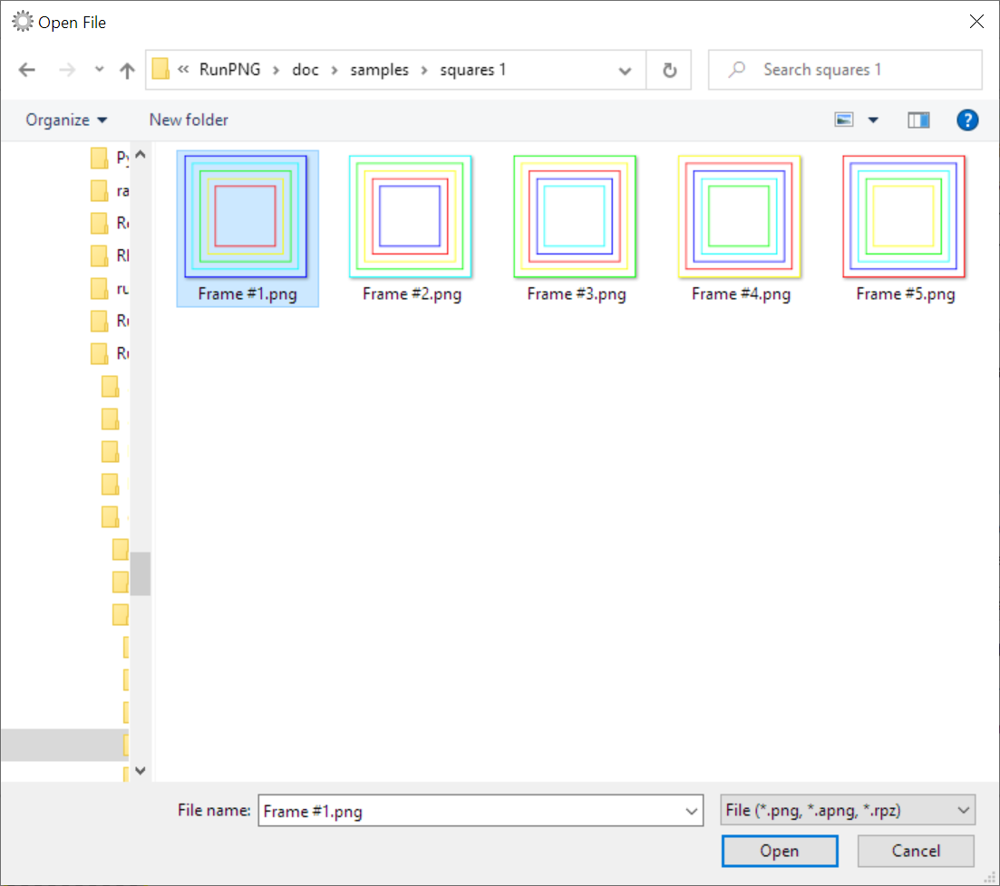
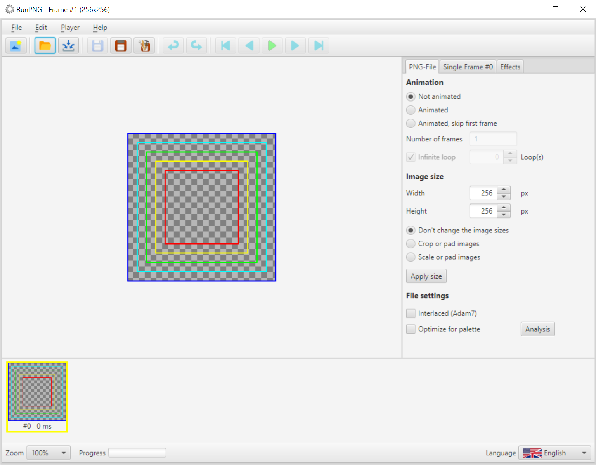
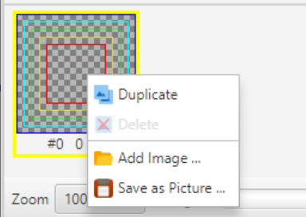
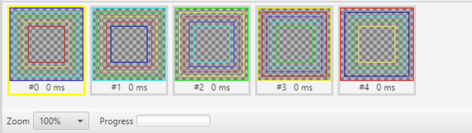
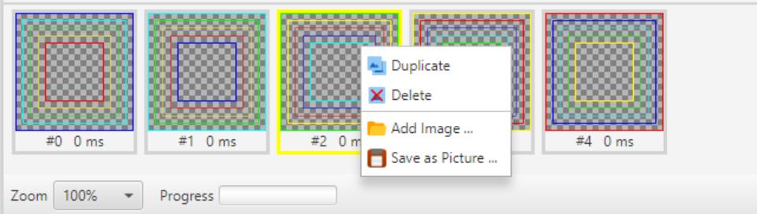
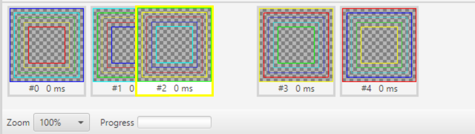

Single Frames Handling
Reading of Single Frames
An image sequence does not always have to be read in in a single process, but can also be compiled image by image. There are some colored squares to try out in the RunPNG/doc/samples/squares 1/ folder.
First we start RunPNG. In the File menu there is the Open ... entry. The corresponding button in the toolbar can also be used in the same way. If you click on one of the two, an Open File dialog appears.
This dialog allows only a single selection. We mark the picture Frame # 1.png with the mouse and click on Open. Then RunPNG loads the picture into the memory.
The first picture is loaded. It is displayed as the selected image and also specifies the application size (see title bar above). Of course, no meaningful animation can be created with a single image. So we load another picture by clicking with the right mouse button on the symbol picture in the lower picture bar.
A context menu appears that offers the Add Image ... item among other functions. With this we load Frame #2.png. The loaded image appears to the right of the image for which the context menu was called. We do the same with frames #3 to #5. In this way, images can also be easily fetched from other folders.
Now we have a small sequence of five images that can be animated as described in A First Animation. A delay time of 500 ms or longer is recommended here, otherwise it will be too flickering.
Duplicate, Save and Delete of Single Frames

Individual images can also be duplicated, saved or deleted using the context menu. Simply right-click on the relevant picture and select the desired function in the context menu.
Note: If there is only one picture left in the bar, you cannot delete it with the context menu.
Image Order

The order of the individual images can be changed by clicking on an image and moving it to the left or right with the mouse button pressed. Don't be confused because of the indexes. The frames box renumbers the frames right after releasing the mouse button.